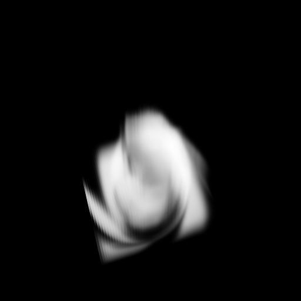

Realtime 3D Fluids
A GPU Parallel Implementation of Jos Stam's Stable Fluids in 3D
Introduction
Fluid flows are a visually interesting part of the world around us and have been traditionally diffcult to include in real time graphics applications because traditional realtime rendering techniques like triangle rasterization are poorly suited to drawing volumetric phenomena which don't have a well defined surface to tesselate triangles over. Recent advances in parrallel computing, specifically GPGPU, have made computation of highly parrallel tasks like raymarching and voxelized fluid dynamics possible in realtime. This webpage describes my implementation of Jos Stam's Stable Fluids as described in his paper "Real-Time Fluid Dynamics for Games".
My Implementation
This implementation was developed on an ASUS Zenbook Prime UX32VD laptop with a 1.9GHz Intel Core i7-3517U, 6GB DDR3 RAM, and an NVIDIA GeForce GT 620M GPU with 96 CUDA cores. On this machine I were able to achieve realtime performance (around 25 FPS) with a 64x64x64 fluid grid and a 1024x1024 imaging window. Below are some images of my implementation running.
Above are one set of intial conditions I fed into the simulation, the gray checkerboard is the intial density grid, and the colorful image is the initial velocity grid. Because the velocity grid represents a 3D vector field, the vector value in each cell can be mapped onto the RGB color space, such that red maps to the x component, green to y, and blue to z (where positive y points upward). This velocity field is a cylinder of high velocity, where the velocity at each point on the cylinder's surface is tangental to the cylinder counterclockwise when looking from the top, plus a little bit upward. This causes the density to flow upward in a swirling vortex from its intital checkerboard pattern.


These images show the above intial conditions as they evolve ver time
This implentation is a realtime, GPU parrallel version of this stable fluids solver extended to 3-Dimensions. GPU parallelism is achieved by leveraging NVIDIA's CUDA API to evolve the fluid system's state, set the boundary conditions of the simulation, and to draw different components the fluid system with ray marching. I use six 3D kernels to evolve the fluid system state (each launched with one thread per cell of the fluid grid), one 2D kernel to set the boundary conditions (launched with one thread per cell on one face of the the simulation volume), and one 2D kernel to draw the simulation volume with ray marching (launched with one thread per pixel in the output image). Each thread running the ray marching kernel determines which pixel it is responsible for based on its location in the computational grid, then computes the ray passing through this pixel based on the camera parameters, then computes the intersection interval of this way with the bounding box of the simulation volume, and iterates the ray paremeter over this intersection interval accumulating color at each step from the density or velocity of the simulation cell which contains the solution of the ray with the current ray parameter. The resulting accumulated color is then written into an OpenGL texture buffer (using Rob Farber's OpenGL/CUDA interop code), and textured onto a quad by the OpenGL fragment shader.